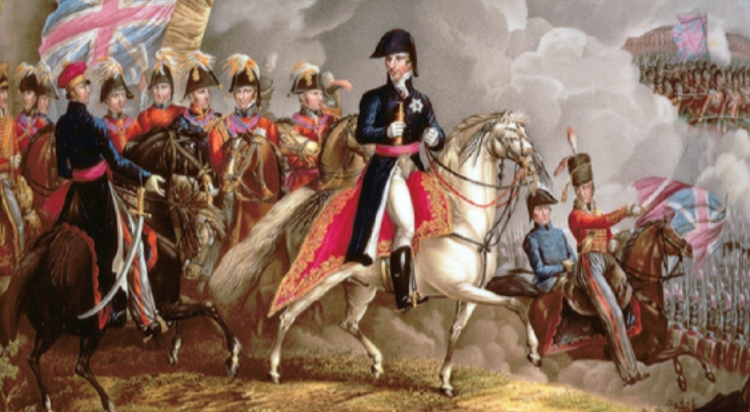

关于
绅士的明智之选，牛津鞋是经典的礼服鞋，非常适合商务或正式场合，与大多数其他的鞋履不同，牛津鞋有一个主要的特点：闭合的鞋带设计。如今，牛津鞋有很多版本，但是每一款都优雅、正式、得体，牛津鞋是每个人的正式场合首选鞋履款式。
特点
闭合的鞋带设计，封闭式襟片，侧边鞋翼向前延伸成为鞋面的一部分，鞋带一抽紧鞋翼会密合成为一整块鞋面。
历史
17世纪时，男鞋以靴子为主，它们通常很高，用扣子而不是鞋带紧紧地扣在一起，在室外和室内都穿着，当时的鞋子往往是高跟鞋，这是法国国王路易十四流行的款式，他身高适中。但当时法国是欧洲的文化中心，因此大多数绅士都将他们的着装选择与法国宫廷相一致，鞋类也不例外。在17世纪四十年代时，由英国牛津大学的学生引进改良，但当时还没有鞋带，直到1785年至1789年受到崭新的革命精神的影响，法国人渐渐放弃银扣带，转而使用鞋带，因为他们认为这更“民主”。到后来随着被普遍运用，逐渐形成了绑带、厚底、高跟、鞋侧翼纹设计的牛津鞋主要特征。

穿搭
牛津鞋的搭配相对比较简单，搭配任意西装，牛津鞋属于百搭的款式，可以适当搭配一些颜色比较鲜艳的长袜作为配搭，西裤最好是九分裤，能露出一小节袜子最佳，袜子和领带配衬，选择和领带色彩相同的袜子做呼应，令造型增加细节感，更显品味与别致。

“A pair of black Oxfords is probably the most dressed-up shoe you can have in your wardrobe,” says Luke McDonald, stylist at men’s online styling service Thread. “And that limits what other clothes you can wear them with.” You can think of them a little like a black blazer; they look great dressed up, but try them with jeans and you begin to look like a street magician.To start from the top down, black should be your go-to for black tailoring, whether you need something for black tie or just a formal work shoe. “They also team well with grey or charcoal tailoring, particularly in more formal offices”
LEEWARD ISLAND
Collection

Brown leather Oxfords are the perfect option when paired with a grey, dark brown or navy suit. Rather than wearing black, a brown Oxford is far more striking when paired with these colours and you will visually stand out. Avoid wearing brown shoes with a black suit. Simple right?

LEEWARD ISLAND
The most unexpected combination with blue or black jeans is perfect. The touch of blue denim colour blends perfectly with the red tone and black jeans blend in perfectly with the dark burgundy veins and contrast perfectly with the brightness of the leather.Entering more formal lines, both with a blazer and a full blue or grey suit is a winning combination. The contrast of cold tones with dark red is very pleasing to the eye. And for suits in black or very dark tones, red falls into the complementary colours, so the combination is super correct.
LEEWARD ISLAND
关于
孟克鞋，又称僧侣鞋，最早出现于系带鞋发明之前的时代，因此是西方最古老的鞋的种类之一，孟克鞋（僧侣鞋）是商务场所正式度第二高的鞋款，最初的流行是因为它惊人的耐磨性，跟当时流行的凉鞋比起来，在穿着中能更好地保护双脚，很适合修道士的日常工作，孟克鞋有单扣、双扣、三扣、交叉搭带三种款式，孟克鞋是骚气满满的绅士鞋履代表。
特点
金属扣带是孟克鞋一个很明显的特征，没有鞋带，而是由横挎带子以皮革制成。。
历史
孟克鞋又称僧侣鞋，最早起源是在15世纪，由意大利修道士所设计出的一种鞋款，最大特色在于鞋面上有一个宽大的横向带装饰及金属环扣，并压附于鞋舌上，而且这个横带装饰称作monk-strap，因此也就是monk-strap shoe孟克鞋的名称由来。孟克鞋的历史非常久远，在鞋带被发明之前，它是唯一的皮鞋款式。曾在19世纪40年代颇受欢迎的孟克鞋，在二次大战期间，更被指定为美国空军军官的鞋款。
穿搭
孟克鞋搭配九分裤的穿搭绝对是一把好手，露出两个扣环，带着一丝阳刚硬朗，孟克鞋的细节品质，同能让你你游走在粗狂与细致之间。穿孟克鞋要注意裤长永远不要遮盖住鞋面扣环，否则，拖沓的裤腿会完全压抑住原先那一层精明的痞气。
Hidden shoematch
Hidden shoematch
Vis
关于
德比鞋相比牛津鞋而言，风格更休闲，不会显示过于正式。如果你不想太过于正式，但又不想失去绅士风度，德比一定是您的不二之选。
特点
开口设计更加舒适，鞋舌与整个鞋面采用一张皮革，两片鞋耳之间用鞋带固定出一些间距，便于调节松紧。
历史
早在在拿破仑时代，当时的时尚界普遍表现出一种军国主义的特点，而德比鞋亦诞生在这个时期，是军国主义的典型载体，半个多世纪甚至更长时间以来，只有士兵们才可以穿德比靴，随着时代的发展，德比鞋开放式鞋带设计、便利性穿搭，慢慢也成为男士皮鞋常见的款式。
穿搭
德比鞋子在皮鞋历史上的地位很重要，特别是当你选择一种风格来增加你的鞋的种类时，德比鞋一定是首选的种类。麦克唐纳说：“你想要一种带有军事气息的东西，德比鞋可以。”精致的德比是存在的，他无需花你太多的时间，德比鞋的功能性更强，更加舒适与百搭。作为一个不那么闷的鞋，设计师们已经做了各种颜色的德比，纯黑色、棕色等等，几乎可以和任何东西搭配。 如果你想买一双鞋，并希望它们在任何地方场合都能发挥作用的，德比鞋这种款式一定是不二之选。
Hidden shoematch
Hidden shoematch
Vis
关于
乐福鞋是一种非常容易穿脱的鞋子种类，在各种各样的休闲皮鞋种类里面，乐福鞋可谓是最重要的种类。乐福鞋是极简主义的鞋履，不同的季节有不同的搭配风格。
特点
乐福鞋，也叫做莫卡辛，没有鞋襟、鞋带包裹脚，也就是常说的一脚蹬，鞋面比较低，脚踝是裸露出来的，乐福鞋常规按类别分为：便士乐福、流苏乐福、Gucci乐福鞋。
历史
1847年，马修和丽贝卡·威尔史密斯于在英国成立一家名为“威尔史密斯“鞋子的生产工厂，专门为皇家骑兵提供鞋子设计、生产与维修。在1926年，马修和丽贝卡的孙子雷蒙德·刘易斯·威尔史密斯受乔治六世国王的委托，制作一款乡间别墅鞋便于国王可以搭配自己的裤子在室内穿着。雷蒙德想出了一个低跟设计，不包括鞋带，可以舒适地滑上滑下。这只鞋的结构与莫卡辛鞋有很多共同点，不过目前还不清楚雷蒙德是否熟悉这种相关的款式，或者他是否根据他收到的非常具体的指示来设计。今天这种风格被简单地称为威尔史密斯乐福鞋，由于乐福鞋自身休闲且易于穿搭的特点，很快就流行起来，并开始作为户外休闲鞋履的选择。
穿搭
一旦你的衣橱里有了一款乐福鞋，下一步就是学会如何用乐福鞋搭配穿着。乐福鞋搭配非常简单，他可以取代几乎任何其他的鞋在下班后穿着，乐福鞋可搭配九分的牛仔裤和休闲裤，在炎热的夏季也可搭配短裤。 如果你想保持轻松，就穿牛仔裤和t恤；如果你想穿更时髦的衣服，就穿衬衫和条纹裤。
Hidden shoematch
Hidden shoematch